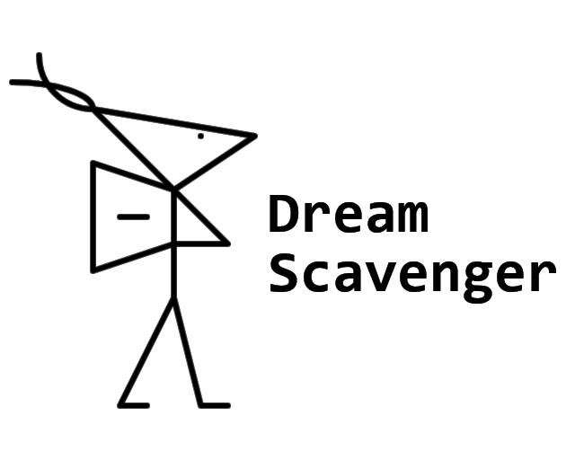

Падальщик снов
Маленькая видеоигра для геймджема Ludum Dare. Это небольшая текстовая история о Падальщие Cнов – страннике, собирающем частички, которые вызывают резонанс в его душе. Через эти частички он хочет "собрать себя" воедино.
Идея игры про сны перекочует в полноценную видеоигру – METAEYE.
